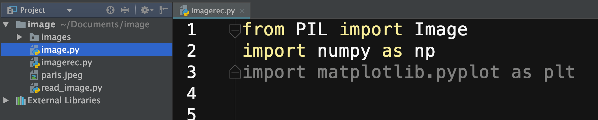
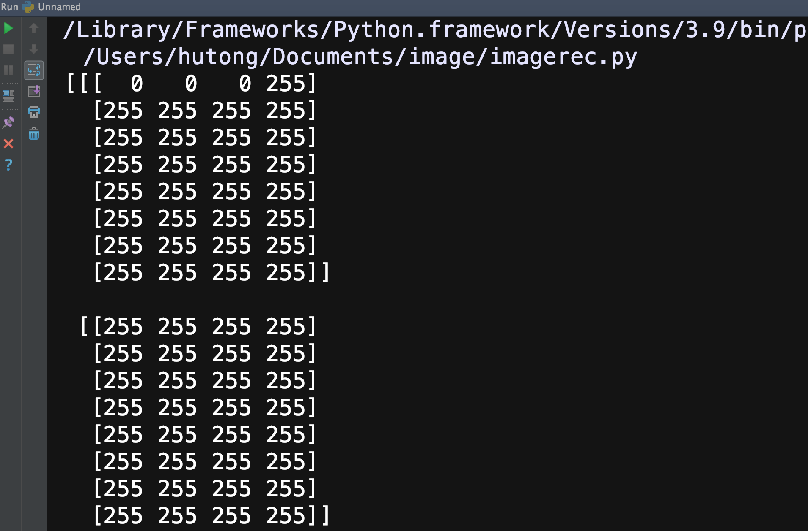
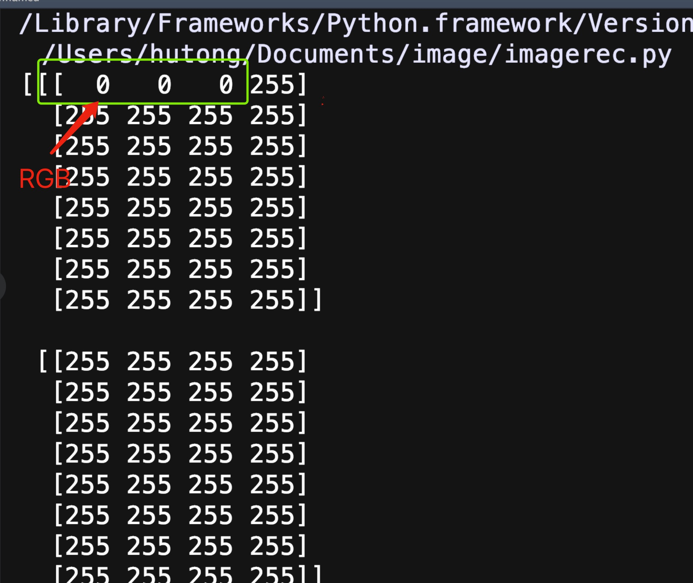
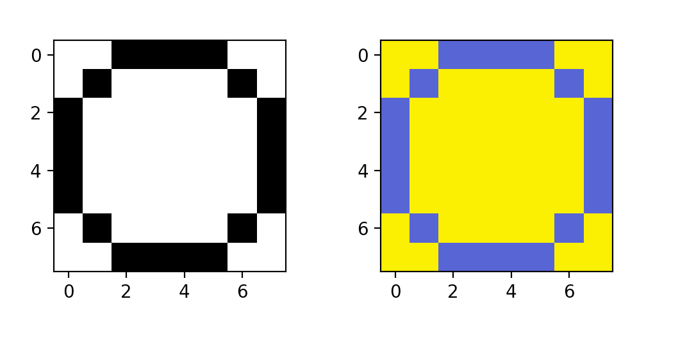
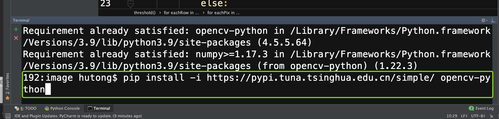
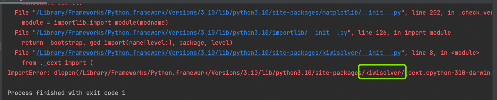

图像识别实验（上）
这次实验课的任务是识别手写的数字。
1.人工智能介绍
人工智能的第一步是训练。我们可以把它类比成在学校学习。人工智能和我们同学一样，为了完成一项工作，需要接受教育。
具体来说，经过训练（training)的人工智能可以将其所学应用于数字世界的任务，例如识别图像、推荐商品等，这个过程被称为”推理”(inference)。
没有训练，就不可能有推理。这很容易讲通。我们如果不默写古诗词（训练），就不可能培养对诗歌的鉴赏能力（推理）。我们如果不大量的做托福真题（训练），我们就不会在实际托福考试中取得好成绩（推理）。
所以人工智能分为训练和推理两个步骤。我们这次需要识别手写的0-9十个数字。为了可以识别（推理），我们需要先进行训练，也就是让人工智能先看大量手写数字的图片。
2. 下载训练所用图片
我们所使用的数据集是由0到9的数字图像构成的。每个数字都由9张图片组成，总共包含了90张训练图像。
每一张图片的命名规则是数字.序号.png，命名规则很重要。为了让人工智能做出正确的决定，我们需要提供带标签的数据。人工智能需要知道7.1.png对应数字7。所以这里每一张图片文件名的第一个数字，就是图片的标签。
如果训练数据没有标签，就像我们平时做托福真题没有答案，背单词没有解释一样。
（注：确实也有不带标签的人工智能训练方法，称为无监督式学习。但这不在我们这学期的范畴里。甚至你今后也不太会接触它。）
下载图片: 手写数字图片
3. 安装PIL和MatplotLib
与numpy和opencv-python一样，PIL和MatplotLib也是Python的模块，提供了很多有用的库函数。为了完成这项实验，我们需要安装这两个模块：
打开terminal，运行如下命令：
python3 -m pip install -i https://pypi.tuna.tsinghua.edu.cn/simple/ --upgrade pip (windows用户将python3替换成python)
python3 -m pip install -i https://pypi.tuna.tsinghua.edu.cn/simple/ --upgrade Pillow（同上）
python3 -m pip install -i https://pypi.tuna.tsinghua.edu.cn/simple/ -U matplotlib（同上）
（注：上周配置不顺利的同学，请在PyCharm的终端上运行这些指令。）
4. 准备编程
将训练图片解压缩后，放入project中。新建一个python文件，取名为imagerec.py。前三行输入：
from PIL import Image
import numpy as np
import matplotlib.pyplot as plt
你也可以直接使用本节最后提供的template code。现在project的窗口类似下图(images文件夹和imagerec.py平行放置）：
{kind=link}
将script path设置为imagerec.py（这一步相信大家已经都会了）。试运行一下，如果没有出现任何的error（会有红色字体出现），就说明模块都安装成功了。
5. 感受图像矩阵
点击images文件夹，打开dot.png这幅图片。如果图片过小可以放大。这幅图片的分辨率是8x8，左上角的像素点是黑色，其余的像素点均为白色。
接下来输入下面三行指令。
i = Image.open('images/dot.png') #加载dot.png图片
iar = np.asarray(i) #将图片转化为像素值数组
print(iar) #打印数组
运行程序，你会看到如下结果：
{kind=link}
打印结果总共有8部分，分别代表图片每行的像素信息。每行有8个像素，每个像素都有4个值。其中前三个值代表像素的三通道，也就是B、G、R值；
第四个值是alpha值，是表征图片透明度的值，我们这次的实验不需要用到。
例如下图中绿色方框的部分，就是第一行第一个像素的RGB值。是不是可以和图片对应起来？
{kind=link}
6. 将所有图像变为二值图像
识别物体最关键的信息是边缘特征，而不是颜色。例如下面两幅图像，右边图像是彩色图，左边图像只有黑白两色。两个图像都能够显示出数字0的边缘特征，而由于存储和处理左边图像的数据量要远远小于右图，从而可以大大缩短训练所用的时间。所以我们第一步，就是要将所有的彩色图像变为二值图像。
（注：二值图像就是图像中只有2种颜色的图像，一般就是黑白图像，2个灰度值分别为0（表示黑色）和255（表示白色））
{kind=link}
我们首先构造一个threshold函数，来将彩色图像变为黑白图像。这个函数的原理非常简单，通过对图像编码的学习，大家已经具备了理解这段函数的能力。我们将图像数组作为函数参数，函数会返回一个只有0和1组成的数组，也就是我们想要的二值图像的数组。
def threshold(imageArray):
newArr = imageArray
numOfPixel = 0 #像素点个数
sum = 0
for eachRow in imageArray:
for eachPix in eachRow:
avgNum = (eachPix[0]+eachPix[1]+eachPix[2])/3 #将像素点的RGB求平均值
numOfPixel = numOfPixel+1
sum = sum+avgNum #对平均值求和
avg = sum/numOfPixel #图像的RGB均值，作为变黑或者变白的分界点
for eachRow in imageArray:
for eachPix in eachRow:
if (eachPix[0]+eachPix[1]+eachPix[2])/3 > avg:
eachPix[0] = 255 #如果像素点RGB平均值高于分界点，就变为白色
eachPix[1] = 255
eachPix[2] = 255
else:
eachPix[0] = 0 #否则变为黑色
eachPix[1] = 0
eachPix[2] = 0
return newArr
得到二值图像数组后，我们就可以显示新的图像了。
i1 = Image.open('images/numbers/y0.4.png')
iar1 = np.array(i1) #将图片转化为数组1
iar2 = np.array(i1) #将图片转化为数组2
threshold(iar1) #对iar1数组进行二值化处理
ax1 = plt.subplot2grid((8,6), (0,0), rowspan=4, colspan=3) #在画布上开辟一块区域
ax2= plt.subplot2grid((8,6), (0,3), rowspan=4, colspan=3) #在画布上开辟另一块对比区域
ax1.imshow(iar1) #显示图1（也就是处理后的图片）
ax2.imshow(iar2) #显示图2（也就是原图）
plt.show()
7. 将文件名输出
def createExamples():
numbersWeHave = range(0,10) #create array from 0-9
versionsWeHave = range(1,10) #create array from 1-9
for eachNum in numbersWeHave:
for eachVer in versionsWeHave:
imgFilePath = 'images/numbers/' + str(eachNum) + '.' + str(eachVer) + '.png'
print(imgFilePath)
8. 作业
作业要求：图像识别作业I
示例代码：Template Code
课堂PPT: 深度学习
9. 常见问题
我已经按照步骤安装了模块，但运行后还是出现import error。
这种问题常出现于PyCharm使用的Python版本与系统不一致的情况。你可以尝试以下几个步骤：
PyCharm - Preferences（或者File - Default Settings)，点击左边Project(一般是倒数第五行），再点击Python interpreter.
{kind=link}
点击add，选择system interpreter, 重新添加python3.10解释器。
{kind=link}
将出现错误的模块卸载掉。例如如果numpy模块出现import错误，则选择numpy，然后点击”-“号，完成模块卸载。
{kind=link}
回到PyCharm主界面。你会发现之前import的那行变为红色。如果你有VPN，你可以将鼠标放在红线上，会出现一个红色小灯泡。PyCharm会根据程序自动推荐你需要安装的模块(下图应该选择opencv-python)，点击即可完成安装。
{kind=link}
如果你没有VPN，你可以点击软件下方Terminal（是PyCharm自带的Terminal，而不是Mac或者Windows的Terminal)。重新按照课程网站上的指令安装一遍模块。安装完成之后程序即可运行。
{kind=link}
这个方法需要你能通过运行结果判断是是哪个模块出现了问题。例如下图：
{kind=link}
你可以通过运行信息，知道是kiwisolver这个模块出现了问题。你只需要将该模块卸载后，在PyCharm的终端里面运行：
pip install kiwisolver
运行程序之后，窗口会出现如下错误：
{kind=link}
这说明PyCharm没有找到图像文件。你需要做两件事情：
将图片文件和python文件拖到项目文件夹的下方（第一层）
在脚本路径中确认是否选择是当前的python文件。